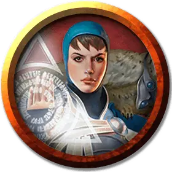

Маг-Законник
Lawmage
Средний Гуманоид (Любая раса), законно-нейтральный

Класс Доспеха 15 (кираса)
Хиты 84 (13к8 + 26)
Скорость 30 футов
| мод | спас | ||
|---|---|---|---|
| СИЛ | 13 | +1 | +1 |
| ЛОВ | 12 | +1 | +1 |
| ТЕЛ | 14 | +2 | +2 |
| мод | спас | ||
|---|---|---|---|
| ИНТ | 17 | +3 | +3 |
| МДР | 14 | +2 | +2 |
| ХАР | 13 | +1 | +1 |
Навыки Восприятие +5, Магия +6, Убеждение +4
Чувства пассивное Восприятие 15
Языки Общий, плюс любой другой язык
Опасность 6 (2300 опыта)
Бонус мастерства +3
Особенности
Использование заклинаний. Законмаг является заклинателем Азориусов 8-го уровня. Его базовой характеристикой заклинаний является Интеллект (Сл спасброска от заклинаний 14, +6 к попаданию атаками заклинаниями). У него подготовлены следующие заклинания волшебника:
• Заговоры (неограниченно): огненный снаряд [fire bolt], дружба [friends], свет [light], сообщение [message];
• 1 уровень (4 ячейки): сигнал тревоги [alarm], поспешное отступление [expeditious retreat], щит [shield];
• 2 уровень (3 ячейки): волшебный замок [arcane lock], обнаружение мыслей [detect thoughts], удержание личности [hold person];
• 3 уровень (3 ячейки): подсматривание [clairvoyance], рассеивание магии [dispel magic], замедление [slow];
• 4 уровень (2 ячейки): поиск существа [locate creature], каменная кожа [stoneskin].
Действия
Боевой посох. . Рукопашная атака оружием: +4 к попаданию, досягаемость 5 фт., одна цель. Попадание: 4 (1к6 + 1) дробящего урона или 5 (1к8 + 1) дробящего урона при использовании двумя руками.
Описание
В Сенате Азориусов есть заклинатели, обученные ловить нарушителей закона и привлекать их к ответственности. Магия мага закона сосредоточена на сдерживании преступников и защите случайных прохожих от жертв, когда арестанты преследуют злоумышленников. Значительная часть ведалкенов гильдии — маги закона.